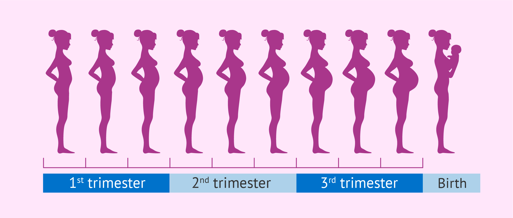
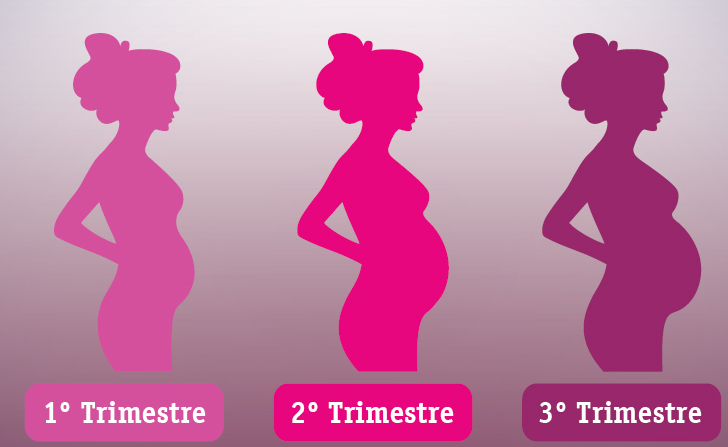

STAGES OF PREGNANCY

A typical pregnancy lasts 40 weeks from the first day of your last menstrual period (LMP) to the birth of the baby. It is divided into three stages, called trimesters: first trimester, second trimester, and third trimester.
Trimesters

First Trimester
The early changes that signify pregnancy become present in the first trimester. A missed period may be the first sign you are pregnant. Other changes will also occur.
After fertilization and implantation, a baby is at first just an embryo: two layers of cells from which all the organs and body parts will develop. Growing quickly, your baby is soon about the size of a kidney bean and constantly moving. The heart is beating quickly and the intestines are forming. Your budding son or daughter's earlobes, eyelids, mouth, and nose are also taking shape.
Hormonal changes will affect almost every organ in the body. Some signs of early pregnancy include:
- Extreme fatigue
- Tender, swollen breasts. Nipples may protrude.
- Nausea with or without throwing up (morning sickness)
- Cravings or aversion to certain foods
- Mood swings
- Constipation
- Frequent urination
- Headache
- Heartburn
- Weight gain or loss
Some of the changes you experience in your first trimester may cause you to revise your daily routine. You may need to go to bed earlier or eat more frequent or smaller meals. Some women experience a lot of discomfort, and others may not feel any at all. Each pregnancy is different and even if you've been pregnant before you may feel completely different with each subsequent pregnancy.
At 4 weeks, your baby is developing:
- The nervous system (brain and spinal cord) has begun to form.
- The heart begins to form.
- Arm and leg buds begin to develop.
- Your baby is now an embryo and 1⁄25 of an inch long.
At 8 weeks, the embryo begins to develop into a fetus:
- All major organs have begun to form.
- The baby's heart begins to beat.
- The arms and legs grow longer.
- Fingers and toes have begun to form.
- Sex organs begin to form.
- The face begins to develop features.
- The umbilical cord is clearly visible.
- At the end of 8 weeks, your baby is a fetus, and is nearly 1 inch long, weighing less than ⅛ of an ounce.
The end of the first trimester is at about week 12, at this point in your baby's development:
- The nerves and muscles begin to work together. Your baby can make a fist.
- The external sex organs show if your baby is a boy or girl.
- Eyelids close to protect the developing eyes. They will not open again until week 28.
- Head growth has slowed, and your baby is about 3 inches long, and weighs almost an ounce.
Second Trimester
Once you enter the second trimester you may find it easier than the first. Your nausea (morning sickness) and fatigue may lessen or go away completely. However, you will also notice more changes to your body. That "baby bump" will start to show as your abdomen expands with the growing baby. By the end of the second trimester you will even be able to feel your baby move!At the beginning of the second trimester, babies are about 3 1/2 inches long and weigh about 1 1/2 ounces. Tiny, unique fingerprints are now in place, and the heart pumps 25 quarts of blood a day. As the weeks go by, your baby's skeleton starts to harden from rubbery cartilage to bone, and he or she develops the ability to hear. You're likely to feel kicks and flutters soon if you haven't already.
Some changes you may notice in your body in the second trimester include:
- Back, abdomen, groin, or thigh aches and pains
- Stretch marks on your abdomen, breasts, thighs, or buttocks
- Darkening of the skin around your nipples
- A line on the skin running from belly button to pubic hairline (linea nigra)
- Patches of darker skin, usually over the cheeks, forehead, nose, or upper lip. This is sometimes called the mask of pregnancy (melasma, or Chloasma facies).
- Numb or tingling hands (carpal tunnel syndrome)
- Itching on the abdomen, palms, and soles of the feet. (Call your doctor if you have nausea, loss of appetite, vomiting, yellowing of skin, or fatigue combined with itching. These can be signs of a liver problem.)
- Swelling of the ankles, fingers, and face. (If you notice any sudden or extreme swelling or if you gain a lot of weight quickly, call your doctor immediately. This could be a sign of a serious condition called preeclampsia.)
As your body changes in the second trimester, your baby continues to develop:
- The musculoskeletal system continues to form.
- Skin begins to form and is nearly translucent.
- Meconium develops in your baby's intestinal tract. This will be your baby's first bowel movement.
- Your baby begins sucking motions with the mouth (sucking reflex).
- Your baby is about 4 to 5 inches long and weighs almost 3 ounces.
At about 20 weeks in the second trimester, your baby continues to develop:
- Your baby is more active. You might feel movement or kicking.
- Your baby is covered by fine, feathery hair called lanugo and a waxy protective coating called vernix.
- Eyebrows, eyelashes, fingernails, and toenails have formed. Your baby can even scratch itself.
- Your baby can hear and swallow.
- Now halfway through your pregnancy, your baby is about 6 inches long and weighs about 9 ounces.
By 24 weeks, even more changes occur for your growing baby:
- The baby's bone marrow begins to make blood cells.
- Taste buds form on your baby's tongue.
- Footprints and fingerprints have formed.
- Hair begins to grow on your baby's head.
- The lungs are formed, but do not yet work.
- Your baby has a regular sleep cycle.
- If your baby is a boy, his testicles begin to descend into the scrotum. If your baby is a girl, her uterus and ovaries are in place, and a lifetime supply of eggs has formed in the ovaries.
- Your baby stores fat and weighs about 1½ pounds, and is 12 inches long.
Third Trimester
The third trimester is the final stage of pregnancy. Discomforts that started in the second trimester will likely continue, along with some new ones. As the baby grows and puts more pressure on your internal organs, you may find you have difficulty breathing and have to urinate more frequently. This is normal and once you give birth these problems should go away.Babies weigh about 2 1/4 pounds by the start of the third trimester. They can blink their eyes, which now sport lashes. And their wrinkled skin is starting to smooth out as they put on baby fat. They're also developing fingernails, toenails, and real hair (or at least some peach fuzz), and adding billions of neurons to their brain. Your blossoming baby will spend his or her final weeks in utero putting on weight. At full term, the average baby is more than 19 inches long and weighs nearly 7 pounds.
In the third and final trimester you will notice more physical changes, including:
- Swelling of the ankles, fingers, and face. (If you notice any sudden or extreme swelling or if you gain a lot of weight really quickly, call your doctor right away. This could be a sign of a serious condition called preeclampsia.)
- Hemorrhoids
- Tender breasts, which may leak a watery pre-milk called colostrum
- Your belly button may protrude
- The baby "dropping," or moving lower in your abdomen
- Contractions, which can be a sign of real or false labor
- Other symptoms you may notice in the third trimester include shortness of breath, heartburn, and difficulty sleeping
Other changes are happening in your body during the third trimester that you can't see. As your due date approaches, your cervix becomes thinner and softer in a process called effacement that helps the cervix open during childbirth. Your doctor will monitor the progress of your pregnancy with regular exams, especially as you near your due date.
At 32 weeks in the third trimester, your baby's development continues:
- Your baby's bones are soft but fully formed.
- Movements and kicking increase.
- The eyes can open and close.
- Lungs are not fully formed, but practice "breathing" movements occur.
- Your baby's body begins to store vital minerals, such as iron and calcium.
- Lanugo (fine hair) begins to fall off.
- Your baby is gaining about ½ pound a week, weighs about 4 to 4½ pounds, and is about 15 to 17 inches long.
At 36 weeks, as your due date approaches, your baby continues development:
- The protective waxy coating (vernix) thickens.
- Body fat increases.
- Your baby is getting bigger and has less space to move around. Movements are less forceful, but you will still feel them.
- Your baby is about 16 to 19 inches long and weighs about 6 to 6½ pounds.
Finally, from 37 to 40 weeks the last stages of your baby's development occur:
- By the end of 37 weeks, your baby is considered full term.
- Your baby's organs are capable of functioning on their own.
- As you near your due date, your baby may turn into a head-down position for birth.
- Average birth weight is between 6 pounds, 2 ounces to 9 pounds, 2 ounces and average length is 19 to 21 inches long. Most full-term babies fall within these ranges, but healthy babies come in many different weights and sizes.